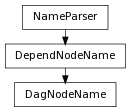

firstParentOf
Returns the parent node
added optional generations flag, which gives the number of levels up that you wish to go for the parent; ie:
>>> DagNodeName("NS1:TopLevel|Next|ns2:Third|Fourth").getParent(2)
DagNodeName(u'NS1:TopLevel|Next')
Negative values will traverse from the top, not counting the initial node name:
>>> DagNodeName("NS1:TopLevel|Next|ns2:Third|Fourth").getParent(-3)
DagNodeName(u'NS1:TopLevel|Next|ns2:Third')
A value of 0 will return the same node. The default value is 1.
Since the original command returned None if there is no parent, to sync with this behavior, None will be returned if generations is out of bounds (no IndexError will be thrown).
unlike the root command which determines the parent via string formatting, this command uses the listRelatives command
basename
rootOf